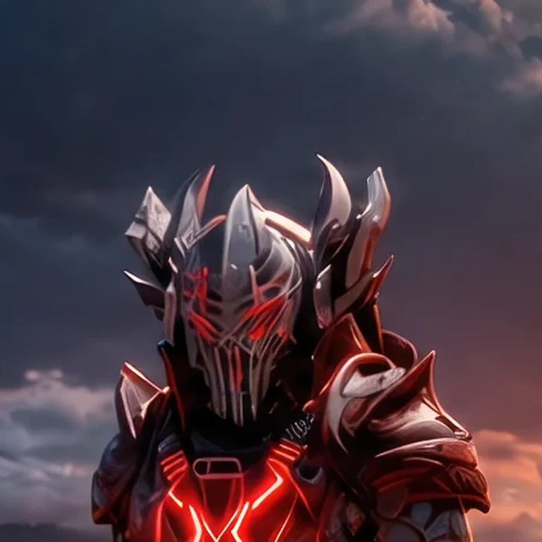

Field Observation
Arath investigates a green lattice orb hovering above a pool on the right. The hovering orb suggests alien survey activity on Earth 1.
 ©
©
GENEZYS ARCHIVE · Legionnaire
Nexus Warden
Identity & combat record
Archive node 01 / 04

Archive record
Arath believes every structure has a weak point, including the universe. The Balance Pin finds two of them at once and strikes both. Among the Eternal Custodian, Arath is the one who calculates where the portal will open next.
Combat signature
Fractures constants into the weak point: Performs 2 normal attacks to 2 different enemies.
Genezys 07:02 ™&©2026LEGIONS
Field intelligence
Archive node 02 / 04
FIELD REPORT // ANOMALY INVESTIGATION

Mission successfulAdditional intelligence available
Field Observation
Arath investigates a green lattice orb hovering above a pool on the right. The hovering orb suggests alien survey activity on Earth 1.
Environment
Object Analysis
Key Findings
Restricted visual records
Archive node 03 / 04

Motion archive
Archive node 04 / 04
Motion record not yet recovered